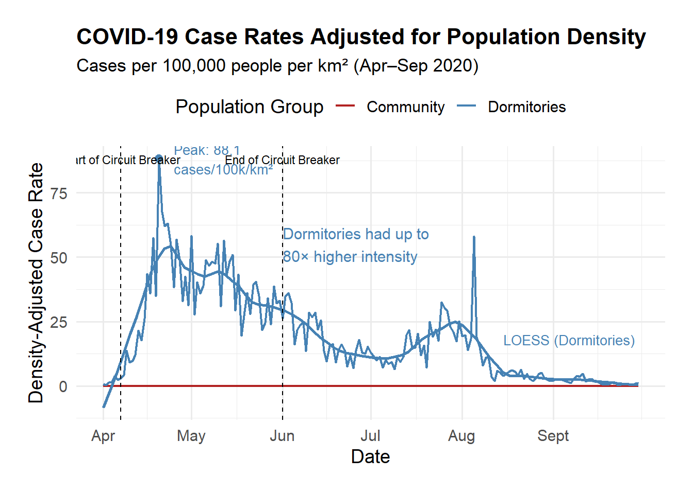

Daniel Lip, Pierre Chan, Howard Yeo, Joel Koh, Jolie Yeo, Danish Dol, Sarah Loo
# Load necessary librarieslibrary(tidyverse)
── Attaching core tidyverse packages ──────────────────────── tidyverse 2.0.0 ──
✔ dplyr 1.1.4 ✔ readr 2.1.5
✔ forcats 1.0.0 ✔ stringr 1.5.1
✔ ggplot2 3.5.2 ✔ tibble 3.3.0
✔ lubridate 1.9.4 ✔ tidyr 1.3.1
✔ purrr 1.0.4
── Conflicts ────────────────────────────────────────── tidyverse_conflicts() ──
✖ dplyr::filter() masks stats::filter()
✖ dplyr::lag() masks stats::lag()
ℹ Use the conflicted package (<http://conflicted.r-lib.org/>) to force all conflicts to become errors
library(lubridate)
# Load the datasetcovid_data <-read_csv("covid19_sg.csv")
Rows: 717 Columns: 36
── Column specification ────────────────────────────────────────────────────────
Delimiter: ","
chr (4): Phase, Perc population completed at least one dose, Perc populati...
dbl (31): Daily Confirmed, False Positives Found, Cumulative Confirmed, Dai...
date (1): Date
ℹ Use `spec()` to retrieve the full column specification for this data.
ℹ Specify the column types or set `show_col_types = FALSE` to quiet this message.
covid_data
# A tibble: 717 × 36
Date `Daily Confirmed` `False Positives Found` `Cumulative Confirmed`
<date> <dbl> <dbl> <dbl>
1 2020-01-23 1 NA 1
2 2020-01-24 2 NA 3
3 2020-01-25 1 NA 4
4 2020-01-26 0 NA 4
5 2020-01-27 1 NA 5
6 2020-01-28 2 NA 7
7 2020-01-29 3 NA 10
8 2020-01-30 3 NA 13
9 2020-01-31 3 NA 16
10 2020-02-01 2 NA 18
# ℹ 707 more rows
# ℹ 32 more variables: `Daily Discharged` <dbl>,
# `Passed but not due to COVID` <dbl>, `Cumulative Discharged` <dbl>,
# `Discharged to Isolation` <dbl>, `Still Hospitalised` <dbl>,
# `Daily Deaths` <dbl>, `Cumulative Deaths` <dbl>,
# `Tested positive demise` <dbl>, `Daily Imported` <dbl>,
# `Daily Local transmission` <dbl>, …
# Count total number of NA values before cleaningtotal_na_before <-sum(is.na(covid_data))print(paste("Total NA values before cleaning:", as.numeric(total_na_before)))
[1] "Total NA values before cleaning: 9083"
# Clean dataset: replace NA in numeric columns with 0covid_data <- covid_data %>%mutate('Perc population completed at least one dose'=as.numeric(`Perc population completed at least one dose`),'Perc population completed vaccination'=as.numeric(`Perc population completed vaccination`),'Perc population taken booster shots'=as.numeric(`Perc population taken booster shots`), )
Warning: There were 3 warnings in `mutate()`.
The first warning was:
ℹ In argument: `Perc population completed at least one dose = as.numeric(`Perc
population completed at least one dose`)`.
Caused by warning:
! NAs introduced by coercion
ℹ Run `dplyr::last_dplyr_warnings()` to see the 2 remaining warnings.
# Clean dataset: replace NA in numeric columns with 0covid_clean <- covid_data %>%mutate(across(where(is.numeric), ~replace_na(., 0)))# Count total number of 0s in numeric columns after cleaningtotal_zeros_after <- covid_clean %>%select(where(is.numeric)) %>%summarise_all(~sum(. ==0)) %>%unlist() %>%sum()print(paste("Total 0 values after cleaning:", as.numeric(total_zeros_after)))
[1] "Total 0 values after cleaning: 13064"
# Define fixed population and land area values (2020)dorm_population <-311100dorm_land_area <-5.0community_population <-5685807community_land_area <-723.3# 728.3 - 5.0# Add density-adjusted rates to the datasetcovid_clean <- covid_clean %>%mutate(dorm_cases_density_rate = (`Local cases residing in dorms MOH report`/ dorm_population) *100000/ dorm_land_area,community_cases_density_rate = (`Local cases not residing in doms MOH report`/ community_population) *100000/ community_land_area )
library(patchwork)library(zoo)
Attaching package: 'zoo'
The following objects are masked from 'package:base':
as.Date, as.Date.numeric
# Filter data for focus periodcovid_focus <- covid_clean %>%filter(Date >=as.Date("2020-04-01") & Date <=as.Date("2020-09-30")) %>%select(Date,Dormitory =`Local cases residing in dorms MOH report`,Community =`Local cases not residing in doms MOH report`) %>%mutate(Dormitory_MA =rollmean(Dormitory, k =7, fill =NA, align ="right"),Community_MA =rollmean(Community, k =7, fill =NA, align ="right"),Month =floor_date(Date, "month") )# Dynamically compute monthly peak rowsdorm_peaks <- covid_focus %>%group_by(Month) %>%filter(Dormitory ==max(Dormitory, na.rm =TRUE)) %>%slice(1) %>%# Ensure only one row per monthungroup() %>%mutate(Label =paste0(format(Date, "%b %d"), ": ", Dormitory, " cases"),Month =floor_date(Month, "month")) # Ensure it's 1st of monthcomm_peaks <- covid_focus %>%group_by(Month) %>%filter(Community ==max(Community, na.rm =TRUE)) %>%slice(1) %>%ungroup() %>%mutate(Label =paste0(format(Date, "%b %d"), ": ", Community, " cases"),Month =floor_date(Month, "month"))# Point of interest (June 25)annotate_point <-as.Date("2020-06-25")annotate_y <- covid_focus %>%filter(Date == annotate_point) %>%pull(Dormitory_MA)# Plot 1: Dormitory Casesp1 <-ggplot(covid_focus, aes(x = Date)) +geom_line(aes(y = Dormitory, color ="Daily Cases"),alpha =0.4) +geom_line(aes(y = Dormitory_MA, color ="Weekly Trend"),size =1) +geom_vline(xintercept =as.Date("2020-04-07"),linetype ="dashed",color ="black") +geom_vline(xintercept =as.Date("2020-06-01"),linetype ="dashed",color ="black") +geom_text(data = dorm_peaks,aes(x = Month, y =-20, label = Label),inherit.aes =FALSE, vjust =-0.8, size =3, color ="navy") +geom_point(aes(x = annotate_point, y = annotate_y), color ="navy", size =2.5) +geom_segment(aes(x = annotate_point, y = annotate_y, xend = annotate_point +15, yend = annotate_y +300),arrow =arrow(length =unit(0.15, "cm")),color ="navy", linetype ="dotted") +annotate("text", x =as.Date("2020-04-10"), y =max(covid_focus$Dormitory, na.rm =TRUE),label ="Start of Circuit Breaker",hjust =0, vjust =-1.2, size =3) +annotate("text",x =as.Date("2020-06-04"),y =max(covid_focus$Dormitory, na.rm =TRUE),label ="End of Circuit Breaker",hjust =0, vjust =-1.2, size =3) +annotate("text",x = annotate_point +16,y = annotate_y +300,label ="Aggressive testing & dorm clearance\n(MOH press release 25 Jun)",hjust =0, size =3, color ="navy") +scale_x_date(breaks =seq(as.Date("2020-04-01"), as.Date("2020-09-30"), by ="1 month"),date_labels ="%b",limits =c(as.Date("2020-04-01"), as.Date("2020-09-30")) ) +scale_color_manual(values =c("Daily Cases"="steelblue", "Weekly Trend"="navy")) +labs(title ="COVID-19 Cases in Migrant Worker Dormitories",subtitle ="Daily confirmed cases and weekly trend (Apr–Sep 2020)",caption ="- Weekly trend is a 7-day moving average used to smooth daily fluctuations.\n- Labeled dates indicate the highest number of cases recorded each month.",y ="Dormitory Cases", x =NULL, color =NULL) +theme_minimal() +theme(legend.position ="top")
Warning: Using `size` aesthetic for lines was deprecated in ggplot2 3.4.0.
ℹ Please use `linewidth` instead.
# April spike annotation for Dormitory casescombined_apr <-as.Date("2020-04-20")combined_apr_y <- covid_focus %>%filter(Date == combined_apr) %>%pull(Dormitory_MA)p1 <- p1 +geom_point(aes(x = combined_apr, y = combined_apr_y), color ="navy", size =2.5) +geom_segment(aes(x = combined_apr, y = combined_apr_y,xend = combined_apr +17, yend = combined_apr_y +350), arrow =arrow(length =unit(0.15, "cm")), color ="navy", linetype ="dotted") +annotate("text",x = combined_apr +18,y = combined_apr_y +350,label ="Record spike driven by ramped-up\ndormitory testing (Apr 20–28, MOH)",hjust =0, size =3, color ="navy")# Plot 2: Community Casesp2 <-ggplot(covid_focus, aes(x = Date)) +geom_line(aes(y = Community, color ="Daily Cases"), alpha =0.4) +geom_line(aes(y = Community_MA, color ="Weekly Trend"), size =1) +geom_vline(xintercept =as.Date("2020-04-07"), linetype ="dashed", color ="black") +geom_vline(xintercept =as.Date("2020-06-01"), linetype ="dashed", color ="black") +geom_text(data = comm_peaks, aes(x = Month, y =-20, label = Label),inherit.aes =FALSE, vjust =-0.8, size =3, color ="firebrick") +annotate("text", x =as.Date("2020-04-10"), y =max(covid_focus$Community, na.rm =TRUE),label ="Start of Circuit Breaker", hjust =0, vjust =-1.2, size =3) +annotate("text", x =as.Date("2020-06-04"), y =max(covid_focus$Community, na.rm =TRUE),label ="End of Circuit Breaker", hjust =0, vjust =-1.2, size =3) +scale_x_date(breaks =seq(as.Date("2020-04-01"), as.Date("2020-09-30"), by ="1 month"),date_labels ="%b",limits =c(as.Date("2020-04-01"), as.Date("2020-09-30")) ) +scale_color_manual(values =c("Daily Cases"="darkred", "Weekly Trend"="firebrick")) +labs(title ="COVID-19 Cases in the Community",subtitle ="Daily confirmed cases and weekly trend (Apr–Sep 2020)",caption ="- Weekly trend is a 7-day moving average used to smooth daily fluctuations.\n- Labeled dates indicate the highest number of cases recorded each month.",y ="Community Cases", x ="Date", color =NULL ) +theme_minimal() +theme(legend.position ="top")# Save each plot separatelyggsave("covid_dormitory_plot.png", p1, width =12, height =6)
Warning in geom_point(aes(x = annotate_point, y = annotate_y), color = "navy", : All aesthetics have length 1, but the data has 183 rows.
ℹ Please consider using `annotate()` or provide this layer with data containing
a single row.
Warning in geom_segment(aes(x = annotate_point, y = annotate_y, xend = annotate_point + : All aesthetics have length 1, but the data has 183 rows.
ℹ Please consider using `annotate()` or provide this layer with data containing
a single row.
Warning in geom_point(aes(x = combined_apr, y = combined_apr_y), color = "navy", : All aesthetics have length 1, but the data has 183 rows.
ℹ Please consider using `annotate()` or provide this layer with data containing
a single row.
Warning in geom_segment(aes(x = combined_apr, y = combined_apr_y, xend = combined_apr + : All aesthetics have length 1, but the data has 183 rows.
ℹ Please consider using `annotate()` or provide this layer with data containing
a single row.
Warning: Removed 6 rows containing missing values or values outside the scale range
(`geom_line()`).
Warning: Removed 6 rows containing missing values or values outside the scale range
(`geom_line()`).
# Optionally display each one in sequencep1
Warning in geom_point(aes(x = annotate_point, y = annotate_y), color = "navy", : All aesthetics have length 1, but the data has 183 rows.
ℹ Please consider using `annotate()` or provide this layer with data containing
a single row.
Warning in geom_segment(aes(x = annotate_point, y = annotate_y, xend = annotate_point + : All aesthetics have length 1, but the data has 183 rows.
ℹ Please consider using `annotate()` or provide this layer with data containing
a single row.
Warning in geom_point(aes(x = combined_apr, y = combined_apr_y), color = "navy", : All aesthetics have length 1, but the data has 183 rows.
ℹ Please consider using `annotate()` or provide this layer with data containing
a single row.
Warning in geom_segment(aes(x = combined_apr, y = combined_apr_y, xend = combined_apr + : All aesthetics have length 1, but the data has 183 rows.
ℹ Please consider using `annotate()` or provide this layer with data containing
a single row.
Warning: Removed 6 rows containing missing values or values outside the scale range
(`geom_line()`).
p2
Warning: Removed 6 rows containing missing values or values outside the scale range
(`geom_line()`).
library(scales)
Attaching package: 'scales'
The following object is masked from 'package:purrr':
discard
The following object is masked from 'package:readr':
col_factor
# Prepare monthly summarymonthly_cases <- covid_clean %>%filter(Date >=as.Date("2020-04-20") & Date <=as.Date("2020-09-07")) %>%mutate(Month =floor_date(Date, "month")) %>%group_by(Month) %>%summarise(Dormitory =sum(`Local cases residing in dorms MOH report`, na.rm =TRUE),Community =sum(`Local cases not residing in doms MOH report`, na.rm =TRUE) ) %>%pivot_longer(cols =c(Dormitory, Community), names_to ="Group", values_to ="Cases") %>%mutate(Month =factor(format(Month, "%b %Y"), levels =format(seq.Date(as.Date("2020-04-01"), as.Date("2020-09-01"), by ="month"), "%b %Y")))# Plotmonthly_bar <-ggplot(monthly_cases, aes(x = Month, y = Cases, fill = Group)) +geom_col(position =position_dodge(width =0.9)) +geom_text(aes(label =comma(Cases)),position =position_dodge(width =0.9),vjust =-0.3,size =3.5 ) +scale_fill_manual(values =c("Dormitory"="steelblue", "Community"="darkred")) +labs(title ="Monthly COVID-19 Cases by Group",subtitle ="Summarised total cases in dormitories vs community (Apr–Sep 2020)",x ="Month", y ="Total Cases", fill ="Case Group" ) +theme_minimal() +theme(axis.text.x =element_text(angle =45, hjust =1))# Save and viewggsave("monthly_covid_cases_grouped.png", monthly_bar, width =10, height =6)monthly_bar
library(tidyr)library(ggplot2)# Prepare long-form datacovid_long <- covid_clean %>%select(Date, dorm_cases_density_rate, community_cases_density_rate) %>%pivot_longer(cols =-Date, names_to ="Group", values_to ="Rate") %>%mutate(Date =as.Date(Date),Group =recode(Group,"dorm_cases_density_rate"="Dormitories","community_cases_density_rate"="Community") ) %>%filter(Date >=as.Date("2020-04-01") & Date <=as.Date("2020-09-30"))# Find dormitory peakpeak_dorm <- covid_long %>%filter(Group =="Dormitories") %>%filter(Rate ==max(Rate, na.rm =TRUE)) %>%slice(1)peak_date <- peak_dorm$Datepeak_rate <- peak_dorm$Rate# Plotdensity_plot <-ggplot(covid_long, aes(x = Date, y = Rate, color = Group)) +geom_line(size =0.8) +# LOESS smoothing for Dormitories onlygeom_smooth(data = covid_long %>%filter(Group =="Dormitories"),aes(x = Date, y = Rate),se =FALSE, method ="loess", span =0.2,color ="steelblue", size =1 ) +# Label the LOESS lineannotate("text", x =as.Date("2020-08-15"), y =18,label ="LOESS (Dormitories)", color ="steelblue", size =3.5, hjust =0) +# Peak dorm point and labelgeom_point(data = peak_dorm, aes(x = Date, y = Rate), color ="steelblue", size =2.5) +annotate("text",x = peak_date +5,y = peak_rate,label =paste0("Peak: ", round(peak_rate, 1), "\ncases/100k/km²"),hjust =0,size =3.5,color ="steelblue") +# Color scalescale_color_manual(values =c("Dormitories"="steelblue", "Community"="firebrick")) +# Axis setupscale_x_date(breaks =seq(as.Date("2020-04-01"), as.Date("2020-09-30"), by ="1 month"),date_labels ="%b",limits =c(as.Date("2020-04-01"), as.Date("2020-09-30")) ) +# Circuit Breaker vertical lines and horizontal labelsgeom_vline(xintercept =as.Date("2020-04-07"), linetype ="dashed", color ="black") +geom_vline(xintercept =as.Date("2020-06-01"), linetype ="dashed", color ="black") +annotate("text", x =as.Date("2020-04-07"), y =88,label ="Start of Circuit Breaker", size =3, color ="black", hjust =0.5) +annotate("text", x =as.Date("2020-06-01"), y =88,label ="End of Circuit Breaker", size =3, color ="black", hjust =0.5) +# Disparity annotationannotate("text", x =as.Date("2020-06-01"), y =55,label ="Dormitories had up to\n80× higher intensity",color ="steelblue", size =4, hjust =0) +# Styling with expanded marginstheme_minimal(base_size =14) +theme(legend.position ="top",plot.title =element_text(face ="bold", size =16),plot.subtitle =element_text(size =13),plot.margin =margin(t =20, r =20, b =20, l =20) ) +labs(title ="COVID-19 Case Rates Adjusted for Population Density",subtitle ="Cases per 100,000 people per km² (Apr–Sep 2020)",x ="Date",y ="Density-Adjusted Case Rate",color ="Population Group" )# Save the plot (JPG or PNG)ggsave("covid_density_rates_sg.png",plot = density_plot,width =10, height =6, dpi =300,device ="png", bg ="white")
`geom_smooth()` using formula = 'y ~ x'
# Optionally displaydensity_plot
`geom_smooth()` using formula = 'y ~ x'

# Load librarieslibrary(tidyverse)library(ggridges)library(lubridate)# Read and clean the datadf <-read_csv("covid19_sg.csv")
Rows: 717 Columns: 36
── Column specification ────────────────────────────────────────────────────────
Delimiter: ","
chr (4): Phase, Perc population completed at least one dose, Perc populati...
dbl (31): Daily Confirmed, False Positives Found, Cumulative Confirmed, Dai...
date (1): Date
ℹ Use `spec()` to retrieve the full column specification for this data.
ℹ Specify the column types or set `show_col_types = FALSE` to quiet this message.
# Select and reshape the datadf_long <- df %>%select(Date,Dorm =`Local cases residing in dorms MOH report`,Community =`Local cases not residing in doms MOH report`) %>%mutate(Date =ymd(Date)) %>%pivot_longer(cols =c(Dorm, Community), names_to ="Group", values_to ="Cases") %>%drop_na(Cases)# Add Month as a categorical variabledf_long <- df_long %>%mutate(Month =month(Date, label =TRUE, abbr =TRUE))# Plot: overlapping ridgelines by monthggplot(df_long, aes(x = Cases, y =fct_rev(Month), color = Group, fill = Group)) +geom_density_ridges(alpha =0.4, scale =3, rel_min_height =0.01) +labs(title ="COVID-19 Cases in Singapore: Community vs Dorms",x ="Number of Cases",y ="Month",fill ="Group",color ="Group") +scale_fill_manual(values =c("Dorm"="#FF6B6B", "Community"="#4D96FF")) +scale_color_manual(values =c("Dorm"="#FF6B6B", "Community"="#4D96FF")) +theme_minimal()
-1.png)
-2.png)
-1.png)